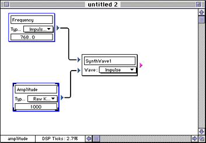

A synthetic wave block has been placed in the middle of the document.
Figure 1: Sawtooth wave in the patch document.
Creating frequency and amplitude knobs
To actually hear the wave, you need to attach frequency and amplitude
knobs and send it to an output.
Attaching the knobs consists of two steps:
When the cursor is over a block port, the status panel in the bottom-left corner of the patch document indicates what kind of port it is. The status panel should read Frequency for the top block port and Amplitude for the bottom block port.
Select the knob tool and create a knob by dragging the block to the left and above the wave.
Move a second knob to the left and below the wave.
Figure 2: Patch with knobs.
Connecting and disconnecting blocks
You can use the ARIA tool's user interface to connect and disconnect
knobs, wave forms, and other elements just as you would connect the
elements on a digital synthesizer.
Table 1: Connecting and disconnecting blocks.
-------------------------------------------------------
To connect |* Move the cursor onto the block port
blocks: |to the right of the topmost knob.
|* Hold down the mouse button and drag
|the line that appears to the top block
|port on the left of the wave.
|If you connect a knob block, it
|changes its name and type in an
|appropriate way.
-------------------------------------------------------
To disconnect |* Move the cursor near (but not over)
blocks: |the connection, press and hold the
|Option key and the mouse button. A
|knife cursor appears.
|* Drag the knife cursor across the
|connection to cut it.
-------------------------------------------------------
Figure 3 shows a patch after knobs have been connected to the frequency and amplitude block ports.

Figure 3: Knobs with changed characteristics connection.
Editing knobs
When you connect a knob to a synthetic waveform or a sample, ARIA
automatically sets characteristics depending on the block you've chosen.
This includes the type of knob, name of knob, default value, maximum and
minimum, and format (integer or fractional value).
You can override the name and default value by clicking and editing, and change the type by using the pop-up.
To change the maximum or minimum, follow these steps:
The knob with its default settings appears.

Figure 4: Complete patch with output block.